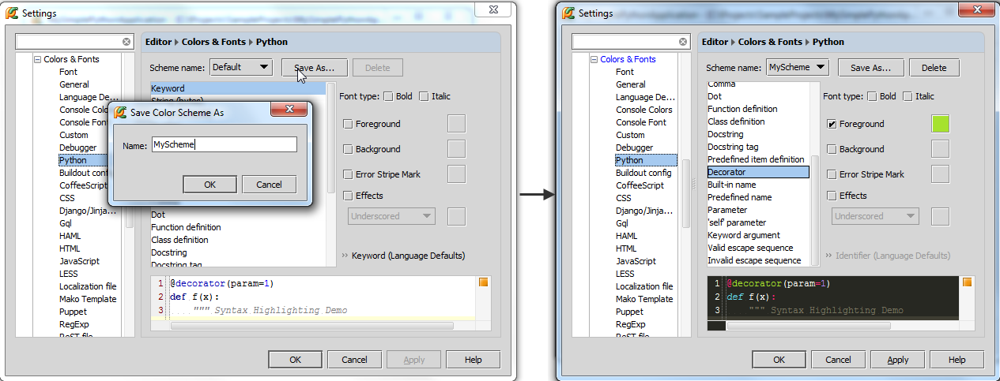
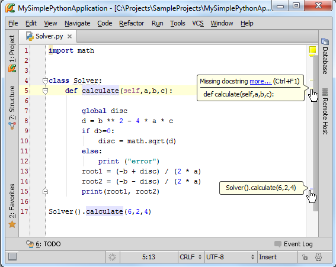
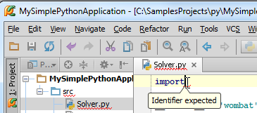
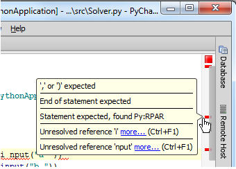
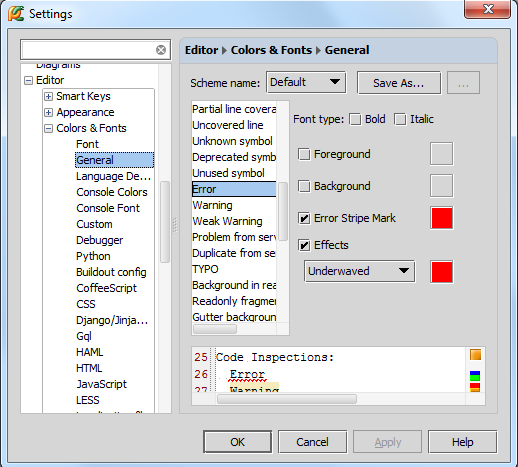
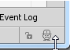
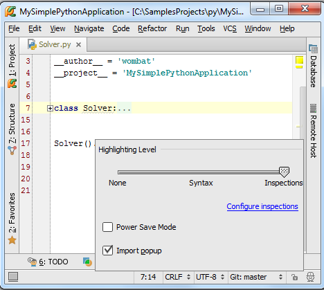

1、代码高亮显示
当你在编辑框中输入代码时，Pycharm会在后台对其进行分析。这个IDE能够智能的识别出关键字、变量、字符串、注释等，并以不同的字体颜色进行显示。Pycharm的符号配色方案定义在 Colors and Fonts settings中（Ctrl+Alt+S→IDE Settings→Editor→Color and Fonts）。
我们先选择编程语言，这里选择Python，然后根据个人习惯来设置字符配色方案。然而这里Pycharm自带的配色方案是不可更改的，我们需要先创建一个拷贝，然后更改：

在预览窗口中会实时展现当前的更改设置，直到你满意为止。单击应用，关闭设置对话框。
详细信息参见Configuring Colors and Fonts。
2、触发标志
回到代码部分，如果你想知道某个符号已经使用的次数，只需将光标定位在其中的一处符号上，其他位置的相同符号就会以高亮形式显示，并且会在右槽显示对应的发生标志（条纹），如果将鼠标指针悬停在这些条纹上，Pycharm会给出详细信息：

3、代码错误提示
如果Pycharm在对代码分析的过程中发现了错误，则会按照以下方式给出提示：
用红色波浪线标记错误代码，鼠标悬停在波浪线上时会给出详细的错误信息。
标题栏的文件名也会用红色波浪线标记，在项目窗口中的目录也会有同样的标记。

在右槽的对应位置显示错误标识，鼠标指针悬停在上方时会给出详细错误信息。

这些错误标识也可以起到导航作用，帮助我们快速定义错误发生的位置。
在右槽顶端显示整个文件的状态标识。绿色带便一切正常，黄色代表存在一些警告，红色代表存在错误。
当然这种错误提示机制的配色方案也是可以更改的，在字体及颜色设置对话框中的General页面进行设置（Ctrl+Alt+S→IDE Settings→Editor→Colors and Fonts→General）：

4、再见帅哥
注意窗口左下角的帅哥头像：

他的名字叫Hector-the-Inspector，负责代码的纠错检查，单击这个头像，会弹出一个窗口，里面有代码的高亮程度调节器：

如果你对自己的编程水平很有自信，那么你可以向左拖动到Syntax或者Hector头像None。在Syntax位置，系统只会对语法错误给出高亮提示，Hector头像只剩一半。在None位置，代码纠错功能完全关闭，编程速度更快，但也更容易出错，对应Hector头像消失。
不过这种更改只对当前文件有效。
如果你想更改代码纠错机制，单击Configure inspections链接，更多有关代码纠错机制的信息参见Code Inspections中的code inspection tutorial。